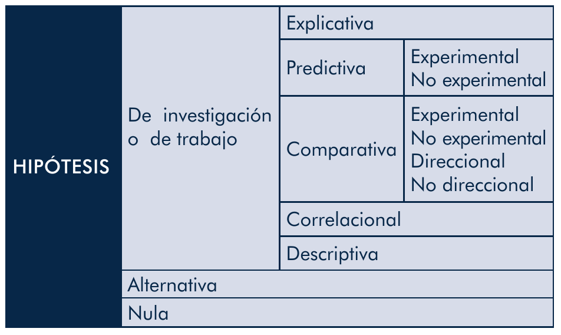

Fundamentos
De acuerdo a lo que señala Arias (2012), la hipótesis "es una suposición que indica la posible relación entre dos o más variables, la cual se formula con el fin de responder a un problema o pregunta de investigación" [9]. En esta línea, es importante destacar los siguientes aspectos sobre la hipótesis (Arias, 2012) [9]:
- Permite que el investigador sepa dónde iniciar su labor de verificación o comprobación a través del proceso de recolección de datos.
- Posibilita conocer qué variables se requerirá medir en virtud de que la misma guarda una fuerte relación con los objetivos que se persiguen alcanzar con la investigación.
- Se emplea para explicar o predecir un hecho determinado.
- Son de utilidad para probar teorías, dado que la hipótesis se somete a pruebas y se verifica en sendos experimentos, permite reforzar una teoría planteada (Hernández Sampieri, Fernández Collado y Baptista Lucio, 2014) [4].
- Pueden contribuir a la generación de nuevas teorías (Hernández Sampieri, Fernández Collado y Baptista Lucio, 2014) [4].
- La prueba de hipótesis puede permitir que se genere información de utilidad en la toma de decisiones.
¿Cuándo usar hipótesis?
Se deben emplear hipótesis cuando se presenten los siguientes casos (Arias, 2012) [9]:
- Cuando se debe explicar relaciones causales entre las variables (investigaciones explicativas)
- Cuando se busca establecer un correlaciones entre las variables (relaciones no causales en investigaciones de carácter descriptivo)
- Cuando se trabaja en investigaciones de tipo exploratorio y se tiene un conocimiento básico sobre el objeto de estudio (no se plantea explícitamente la hipótesis, sino se trabaja con objetivos).
Tipos de hipótesis
Las hipótesis se clasifican de acuerdo a lo que se indica en la siguiente tabla Arias (2012) [9]:
Tipos de hipótesis

A continuación se presenta el detalle de cada uno de los tipos de hipótesis, de acuerdo a lo que señala Arias (2012) [9]:
- Explicativas: explican una causa o un hecho. Ejemplo: "El daño en el motor se debió a una fuga de aceite".
- Predictivas: plantean un efecto u consecuencia de un hecho. Se dividen en:
- Experimental, ejemplo: "El uso de el fármaco Z en los pacientes con X enfermedad disminuirá su nivel de presión arterial"
- No experimental, ejemplo: "La falta de atención médica ocasionará mayor cantidad de casos de adultos mayores con enfermedades crónicas"
- Comparativas: contrastan características de grupos diferentes. Se clasifican en:
- Experimental, ejemplo: "El curso de estudiantes que emplea soporte basado en TICs obtendrá mejores calificaciones". Como se aprecia, se busca manipular una variable independiente a fin de mejorar el rendimiento académico.
- No experimental, ejemplo: "El curso de estudiantes que asiste en el horario diurno obtendrá las mejores calificaciones". Como se observa, no se manipula ninguna variable.
- Direccional, en este caso se busca especificar la tendencia que tienen las variables. Ejemplo: "El grupo de mañana tendrá mayor puntaje que el de la tarde, A>B".
- No direccional, no indica una tendencia, sino más bien especifica que serán diferentes los resultados. Ejemplo: "El grupo de la mañana y la tarde tendrán diferentes resultados, A≠B".
- Correlacionales: indican que puede existir una posible relación estadística entre las variables cuantitativas. Ejemplo: "A mayor cantidad de horas de estudio, mejores calificaciones".
- Descriptivas: indican que puede existir una posible relación no causal entre las variables cualitativas. Ejemplo: "A diferencia de los hombres, las mujeres prefieren ocupar su tiempo libre en actividades intelectuales" (se relacionan variables cualitativas como el género y la actividad preferida en el tiempo libre).
Asimismo, tenemos también el caso de los 2 siguientes tipos de hipótesis:
- Hipótesis alternativas: son aquellas que proponen alternativas que son distintas a la hipótesis de trabajo o investigación. Ejemplo:
- Hipótesis de investigación (Hi): "El poco progreso presentado por los niños en la adquisición de fonemas fue producto del corto tiempo de terapia"
- Hipótesis alternativa (Ha): "El poco progreso presentado por los niños en la adquisición de fonemas fue producto de la mala elección de ejercicios para la terapia"
- Hipótesis nula: es la que niega lo que se presupone en la hipótesis de investigación. Cuando se comparan grupos, indica que no existen diferencias significativas entre los mismos. Es contraria también a la hipótesis direccional. Ejemplo:
- Hipótesis de investigación (Hi): "El curso de estudiantes que emplea soporte basado en TICs obtendrá mejores calificaciones"
- Hipótesis nula (Ho): "Emplear o no TICs como herramienta de soporte educativo no tiene influencia en las calificaciones"